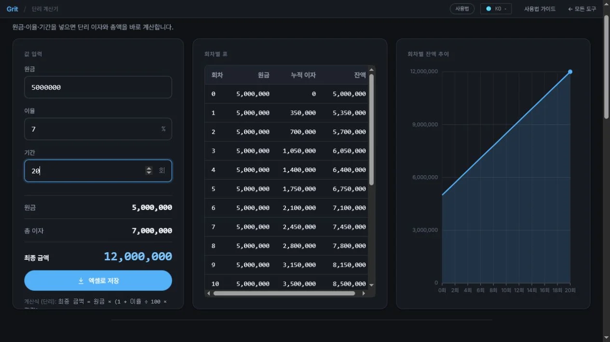

단리 계산기 사용법 — 단리 이자 계산하는 방법
단리(單利)는 원금에만 이자를 계산하는 가장 단순한 이자 방식입니다. 매 기간 이자가 일정하게 발생하므로 계산이 직관적이고, 단기 예금이나 개인 간 차용 등 다양한 상황에서 쓰입니다. 이 글에서는 원금·연이율·기간을 입력해 단리 이자와 최종 금액을 즉시 확인하는 방법을 단계별로 안내합니다.
단리란 무엇인가
단리는 원금에만 이자가 붙는 구조입니다. 이자는 매 기간 같은 금액이 발생하며, 이전에 쌓인 이자에는 이자가 붙지 않습니다.
단리 계산 공식은 다음과 같습니다.
- 이자 = 원금 × 연이율(소수) × 기간(년)
- 최종 금액 = 원금 + 이자
예를 들어 원금 1,000만 원, 연이율 5%, 기간 3년이면 이자 = 1,000만 × 0.05 × 3 = 150만 원, 최종 금액 = 1,150만 원입니다. 매년 이자는 50만 원으로 동일합니다.
단리 계산 단계
- 원금 입력이자를 계산할 원금을 입력합니다. 예:
10,000,000원. - 연이율 입력적용할 연 이자율(%)을 입력합니다. 예:
3.5%. - 기간 입력운용 기간(년 또는 개월)을 입력합니다. 예:
2년. - 결과 확인단리 이자와 최종 금액이 즉시 표시됩니다. 엑셀 파일로 저장할 수 있습니다.
단리와 복리 — 어떤 상황에 어느 쪽을 쓸까
단리와 복리 중 어느 것이 적용되느냐에 따라 최종 금액이 달라집니다.
- 단리가 주로 쓰이는 경우 — 단기 예금, 개인 간 차용 이자 합의, 일부 채권 이자 산정, 만기 일시 지급식 상품.
- 복리가 주로 쓰이는 경우 — 장기 저축성 보험, 적립식 상품, 재투자가 이뤄지는 펀드.
기간이 1~2년처럼 짧으면 단리와 복리의 차이가 크지 않습니다. 그러나 10년 이상 장기라면 복리의 최종 금액이 단리보다 눈에 띄게 많아집니다. 장기 계획을 세울 때는 두 계산기를 함께 비교해보면 좋습니다.
세전·세후 금액 차이
이 계산기는 세전 기준으로 이자를 산출합니다. 실제 금융기관의 예금 이자에는 이자소득세 15.4%(소득세 14% + 지방세 1.4%)가 원천징수됩니다. 세후 실수령 이자는 계산 결과의 약 84.6% 수준입니다. 비과세 상품이나 세금우대 상품은 기관에서 직접 확인하세요.
모든 계산은 브라우저에서 처리됩니다. 입력한 숫자가 서버로 전송되지 않으므로 안심하고 사용할 수 있습니다.
자주 묻는 질문
단리 계산 공식이 무엇인가요?
단리 이자 = 원금 × 연이율(소수) × 기간(년). 예를 들어 원금 1,000만 원, 연이율 5%, 3년이면 이자 = 1,000만 × 0.05 × 3 = 150만 원입니다.
단리와 복리는 어떻게 다른가요?
단리는 매 기간 원금에만 이자를 계산합니다. 복리는 이전에 쌓인 이자까지 합산한 금액에 이자를 계산하므로, 기간이 길어질수록 복리 쪽 최종 금액이 훨씬 커집니다.
예·적금 중 단리가 쓰이는 경우는 어떤 건가요?
단기 예금, 개인 간 차용·대출 이자 합의, 일부 채권 이자 산정, 만기 일시 지급식 상품 등에 주로 단리가 적용됩니다.
세전 금액인가요, 세후 금액인가요?
현재 계산기는 세전 기준입니다. 실제 예금 이자에는 이자소득세 15.4%가 원천징수되므로 세후 실수령 이자는 계산 결과보다 적습니다.
계산 결과를 그대로 믿어도 되나요?
이 도구의 결과는 참고용 추정값입니다. 실제 금융 상품은 금리 변동·수수료·세금 등 조건이 다를 수 있으므로 정확한 수치는 해당 금융기관에 확인하세요.
단리 계산 화면 읽는 법

- 왼쪽에 원금 500만원, 이율 7%, 기간 20회를 입력합니다.
- 회차별 표에서 누적 이자가 매번 같은 금액만큼 늘어나는지 확인합니다.
- 오른쪽 그래프가 곡선이 아닌 직선으로 증가하는 것이 단리의 특징입니다.